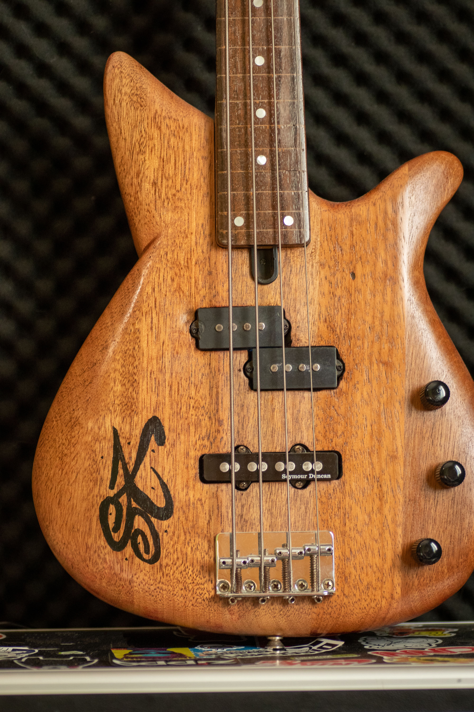

CASO CURIOSO #1: La guitarra que sobrevivió a un incendio
Descubre cómo logramos restaurar una Fender Stratocaster clásica después de un grave accidente en un estudio de grabación local. Un trabajo de luthería extrema.
VER CASOEntérate de las últimas novedades, tips de mantenimiento y datos curiosos del mundo musical.
Descubre cómo logramos restaurar una Fender Stratocaster clásica después de un grave accidente en un estudio de grabación local. Un trabajo de luthería extrema.
VER CASO¿Es cierto que un bajo más pesado suena mejor? Analizamos las frecuencias y el sustain de distintas maderas para desmitificar esta creencia popular entre los bajistas.
VER CASO